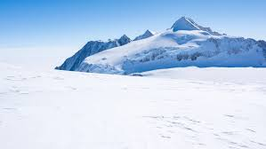

Day 3: Antarctic Research
Antarctica is a natural laboratory, offering unique opportunities for scientific research. The continent is governed by the Antarctic Treaty, which ensures that the region remains a zone of peace and science. Research conducted here ranges from studying the Earth's climate history to exploring the stars in some of the clearest skies on the planet.
Today, we’ll explore some of the key areas of research in Antarctica, including climate science, glaciology, and astronomy.
Climate Research
One of the most important research activities in Antarctica is the study of climate change. Scientists drill ice cores to retrieve samples of ice that are thousands of years old. These ice cores contain trapped air bubbles that give us a snapshot of the Earth's past climate.
By analyzing the layers of ice, researchers can understand how the climate has changed over millennia and predict future climate patterns. This research is crucial for understanding global warming and its potential impact on sea levels and ecosystems worldwide.
Glaciology
Glaciology is the study of glaciers and ice sheets. In Antarctica, researchers focus on understanding the dynamics of the ice sheet, which holds the majority of the Earth's freshwater. They study how the ice flows, how it melts, and how it interacts with the ocean.

The findings from these studies help predict future sea level rise, which could have significant implications for coastal communities around the world. Understanding the stability of the Antarctic ice sheet is crucial for preparing for the impacts of climate change.
Astronomy
Antarctica's clear, cold air and long winter nights make it an excellent location for astronomical observations. Telescopes at Antarctic research stations are used to study cosmic microwave background radiation, which provides clues about the origins of the universe.

The high altitude and dry conditions minimize atmospheric interference, allowing for clearer images of celestial objects. This research helps scientists understand the formation of galaxies, stars, and the evolution of the universe.
Did you know?
üî¨ Did you know that ice cores drilled from Antarctica provide a record of Earth‚Äôs climate going back hundreds of thousands of years? They are crucial for studying past climate changes.
üõ∞Ô∏è Did you know that Antarctica is a prime location for space research? Its clear, cold skies make it an ideal spot for studying the stars and other celestial objects.
üå°Ô∏è Did you know that the coldest temperature ever recorded on Earth was in Antarctica? It was -128.6¬∞F (-89.2¬∞C) at the Soviet Union's Vostok Station in 1983.
üß™ Did you know that scientists in Antarctica are studying extremophiles, organisms that live in extreme conditions, which could provide insights into life on other planets?
üåç Did you know that studying Antarctica's ice sheets is critical for understanding global sea-level rise? Even small changes in ice volume can have significant impacts worldwide.
Conclusion
On this third day, we have explored the cutting-edge research being conducted in Antarctica. The work done here is vital for understanding our planet, its past, and its future. Tomorrow, we’ll summarize our journey through this remarkable continent and reflect on the significance of Antarctica to the world.